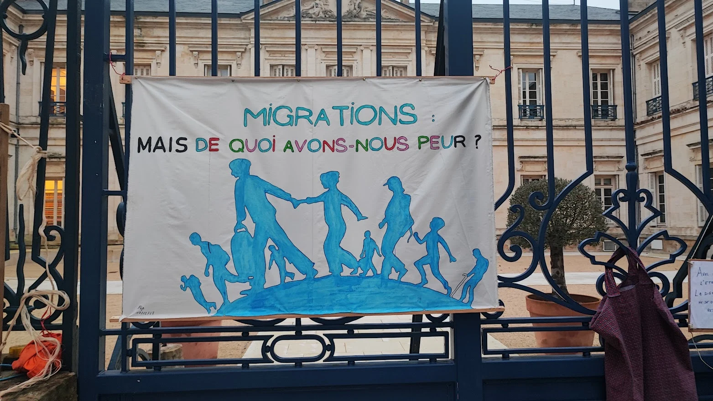
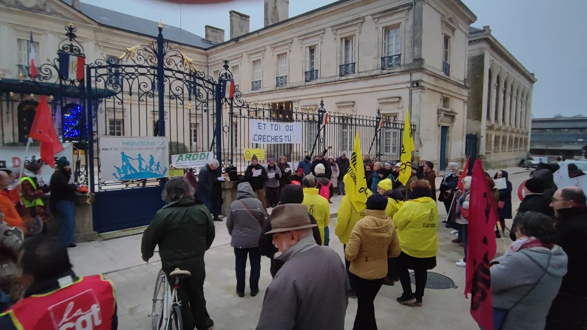
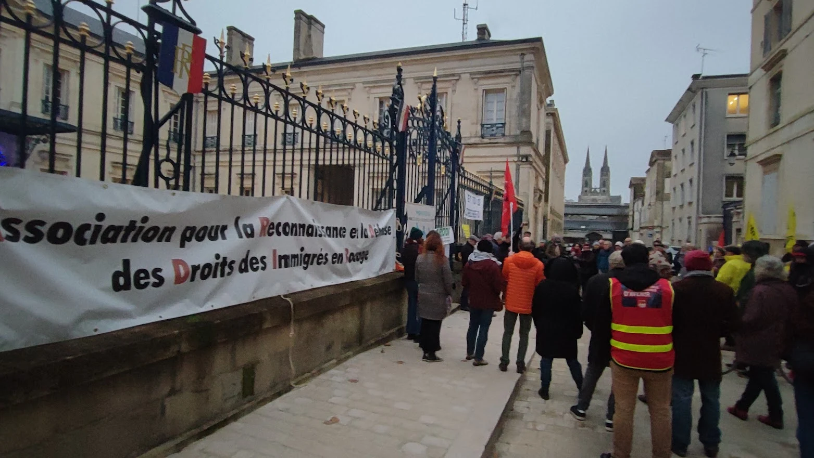
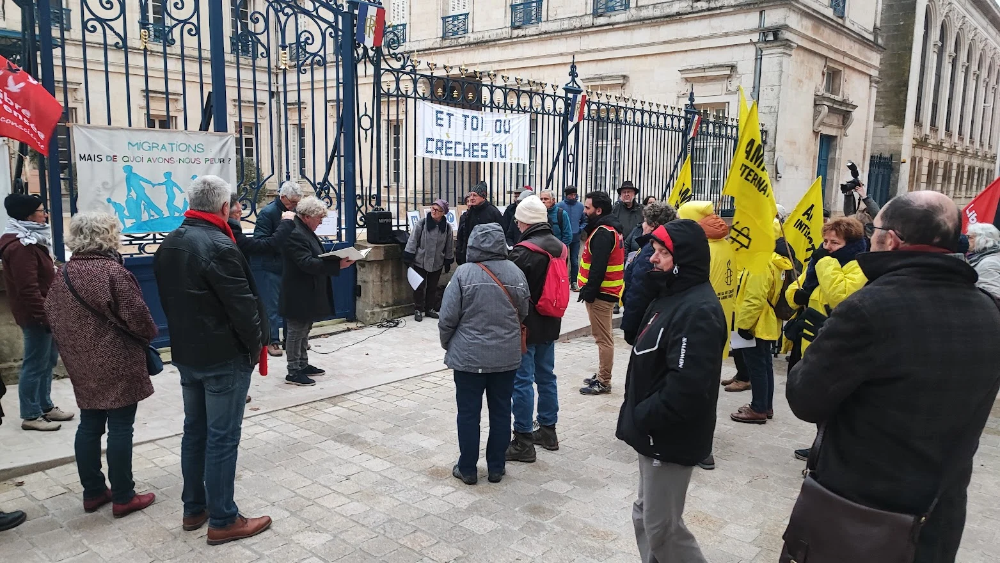

Compte rendu fédéral
À Niort, mobilisation pour la Journée internationale des migrants
Date indiquée par Facebook · 18 décembre 2023
Repères éditoriaux
Nous avons pris part au rassemblement devant la préfecture, à l’appel du collectif Accompagnement migrants 79. Quatre photographies accompagnent la publication du 18 décembre.
Texte conservé avec la publication
A l'appel du collectif Accompagnement migrants 79, un rassemblement s'est tenu devant la préfecture des Deux-Sèvres contre le projet de loi immigration de Darmanin.
Le président de la République et son gouvernement ont fait le choix de s’aligner sur les thèses de l’extrême-droite française et européenne qui font de l’immigré le nouveau paria de nos sociétés modernes, le bouc émissaire pratique quand la crise sociale est là, au lieu d’élever le débat sur ces sujets, de rappeler la richesse de l’immigration dans la construction de notre pays, hier comme aujourd’hui.
L'Editorial de l'Humanité par Maud Vergnol
Qui a peur ?
Le 18 décembre, Journée internationale des migrants, devrait être l’occasion de réaffirmer et de promouvoir les droits des exilés. Cette date avait été choisie en 2000 par l’ONU pour attirer l’attention sur une convention adoptée par l’Assemblée générale des Nations unies, le 18 décembre 1990… restée inapplicable faute de ratifications suffisantes. Son objectif était de protéger les travailleurs étrangers et leur famille de l’exploitation et de la violation de leurs droits. La France ne l’a jamais signée.
Cynisme du calendrier, c’est ce lundi que se réunit la fameuse commission mixte paritaire (CMP) qui va décider du sort de la loi immigration, une semaine après son rejet préalable à l’Assemblée nationale. Un texte « le plus ferme, avec les moyens les plus durs de ces trente dernières années », se félicite son zélé promoteur Gérald Darmanin, qui, à force de jouer avec le feu, s’est brûlé les ailes. Si les quatorze parlementaires s’entendent sur la version finale du texte, une énième loi immigration pourrait donc être votée, après les trente précédentes depuis quarante ans !
Cette séquence de fin d’année était censée saturer le débat public pendant encore plusieurs semaines, pour diffuser l’idée que les immigrés seraient d’abord des « profiteurs » de prestations sociales, mais surtout des potentiels dangers : voleurs d’emplois, délinquants en tout genre et terroristes en puissance. « Mardi soir, nous aurons, je l’espère, un texte et très rapidement nous allons mettre en place ces mesures pour protéger les Français », a encore osé le ministre de l’Intérieur. Qu’importe la réalité pourvu qu’on ait l’ivresse de la haine, qui permet de détourner le regard des véritables défis du moment, et toujours mieux paver le chemin de l’extrême droite.
La politique n’est pas un jeu. Cette loi, si elle est votée dans sa version la plus dure, aura des conséquences dramatiques sur la vie de millions de personnes. Elles qui vivent en France, y travaillent, y cultivent la terre, y étudient, y ont fondé une famille, nous soignent ou éduquent nos enfants… et nous disent aujourd’hui qu’elles « ont peur ».
#immigration
#sanspapiers




Sources
Archive rouge · export Facebook · AR-0002-FB-01519
À lire aussi · LUNDI 18 DÉCEMBRE, journée internationale des migrants.